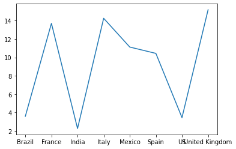

Tugas 1
Contents
Tugas 1#
Membaca Data#
import pandas as pd
import matplotlib.pyplot as plt
import seaborn as sns
data = pd.read_csv('https://raw.githubusercontent.com/imdevskp/covid_19_jhu_data_web_scrap_and_cleaning/master/country_wise_latest.csv')
data
| Country/Region | Confirmed | Deaths | Recovered | Active | New cases | New deaths | New recovered | Deaths / 100 Cases | Recovered / 100 Cases | Deaths / 100 Recovered | Confirmed last week | 1 week change | 1 week % increase | WHO Region | |
|---|---|---|---|---|---|---|---|---|---|---|---|---|---|---|---|
| 0 | Afghanistan | 36263 | 1269 | 25198 | 9796 | 106 | 10 | 18 | 3.50 | 69.49 | 5.04 | 35526 | 737 | 2.07 | Eastern Mediterranean |
| 1 | Albania | 4880 | 144 | 2745 | 1991 | 117 | 6 | 63 | 2.95 | 56.25 | 5.25 | 4171 | 709 | 17.00 | Europe |
| 2 | Algeria | 27973 | 1163 | 18837 | 7973 | 616 | 8 | 749 | 4.16 | 67.34 | 6.17 | 23691 | 4282 | 18.07 | Africa |
| 3 | Andorra | 907 | 52 | 803 | 52 | 10 | 0 | 0 | 5.73 | 88.53 | 6.48 | 884 | 23 | 2.60 | Europe |
| 4 | Angola | 950 | 41 | 242 | 667 | 18 | 1 | 0 | 4.32 | 25.47 | 16.94 | 749 | 201 | 26.84 | Africa |
| ... | ... | ... | ... | ... | ... | ... | ... | ... | ... | ... | ... | ... | ... | ... | ... |
| 182 | West Bank and Gaza | 10621 | 78 | 3752 | 6791 | 152 | 2 | 0 | 0.73 | 35.33 | 2.08 | 8916 | 1705 | 19.12 | Eastern Mediterranean |
| 183 | Western Sahara | 10 | 1 | 8 | 1 | 0 | 0 | 0 | 10.00 | 80.00 | 12.50 | 10 | 0 | 0.00 | Africa |
| 184 | Yemen | 1691 | 483 | 833 | 375 | 10 | 4 | 36 | 28.56 | 49.26 | 57.98 | 1619 | 72 | 4.45 | Eastern Mediterranean |
| 185 | Zambia | 4552 | 140 | 2815 | 1597 | 71 | 1 | 465 | 3.08 | 61.84 | 4.97 | 3326 | 1226 | 36.86 | Africa |
| 186 | Zimbabwe | 2704 | 36 | 542 | 2126 | 192 | 2 | 24 | 1.33 | 20.04 | 6.64 | 1713 | 991 | 57.85 | Africa |
187 rows × 15 columns
indonesia = data[data['Country/Region'] == 'Indonesia']
indonesia
| Country/Region | Confirmed | Deaths | Recovered | Active | New cases | New deaths | New recovered | Deaths / 100 Cases | Recovered / 100 Cases | Deaths / 100 Recovered | Confirmed last week | 1 week change | 1 week % increase | WHO Region | |
|---|---|---|---|---|---|---|---|---|---|---|---|---|---|---|---|
| 80 | Indonesia | 100303 | 4838 | 58173 | 37292 | 1525 | 57 | 1518 | 4.82 | 58.0 | 8.32 | 88214 | 12089 | 13.7 | South-East Asia |
kasus = data[data['Deaths']>20000]
kasus
| Country/Region | Confirmed | Deaths | Recovered | Active | New cases | New deaths | New recovered | Deaths / 100 Cases | Recovered / 100 Cases | Deaths / 100 Recovered | Confirmed last week | 1 week change | 1 week % increase | WHO Region | |
|---|---|---|---|---|---|---|---|---|---|---|---|---|---|---|---|
| 23 | Brazil | 2442375 | 87618 | 1846641 | 508116 | 23284 | 614 | 33728 | 3.59 | 75.61 | 4.74 | 2118646 | 323729 | 15.28 | Americas |
| 61 | France | 220352 | 30212 | 81212 | 108928 | 2551 | 17 | 267 | 13.71 | 36.86 | 37.20 | 214023 | 6329 | 2.96 | Europe |
| 79 | India | 1480073 | 33408 | 951166 | 495499 | 44457 | 637 | 33598 | 2.26 | 64.26 | 3.51 | 1155338 | 324735 | 28.11 | South-East Asia |
| 85 | Italy | 246286 | 35112 | 198593 | 12581 | 168 | 5 | 147 | 14.26 | 80.64 | 17.68 | 244624 | 1662 | 0.68 | Europe |
| 111 | Mexico | 395489 | 44022 | 303810 | 47657 | 4973 | 342 | 8588 | 11.13 | 76.82 | 14.49 | 349396 | 46093 | 13.19 | Americas |
| 157 | Spain | 272421 | 28432 | 150376 | 93613 | 0 | 0 | 0 | 10.44 | 55.20 | 18.91 | 264836 | 7585 | 2.86 | Europe |
| 173 | US | 4290259 | 148011 | 1325804 | 2816444 | 56336 | 1076 | 27941 | 3.45 | 30.90 | 11.16 | 3834677 | 455582 | 11.88 | Americas |
| 177 | United Kingdom | 301708 | 45844 | 1437 | 254427 | 688 | 7 | 3 | 15.19 | 0.48 | 3190.26 | 296944 | 4764 | 1.60 | Europe |
plt.plot(kasus['Country/Region'] , kasus['Deaths / 100 Cases'])
plt.show()

Statistik#
data.describe()
| Confirmed | Deaths | Recovered | Active | New cases | New deaths | New recovered | Deaths / 100 Cases | Recovered / 100 Cases | Deaths / 100 Recovered | Confirmed last week | 1 week change | 1 week % increase | |
|---|---|---|---|---|---|---|---|---|---|---|---|---|---|
| count | 1.870000e+02 | 187.000000 | 1.870000e+02 | 1.870000e+02 | 187.000000 | 187.000000 | 187.000000 | 187.000000 | 187.000000 | 187.00 | 1.870000e+02 | 187.000000 | 187.000000 |
| mean | 8.813094e+04 | 3497.518717 | 5.063148e+04 | 3.400194e+04 | 1222.957219 | 28.957219 | 933.812834 | 3.019519 | 64.820535 | inf | 7.868248e+04 | 9448.459893 | 13.606203 |
| std | 3.833187e+05 | 14100.002482 | 1.901882e+05 | 2.133262e+05 | 5710.374790 | 120.037173 | 4197.719635 | 3.454302 | 26.287694 | NaN | 3.382737e+05 | 47491.127684 | 24.509838 |
| min | 1.000000e+01 | 0.000000 | 0.000000e+00 | 0.000000e+00 | 0.000000 | 0.000000 | 0.000000 | 0.000000 | 0.000000 | 0.00 | 1.000000e+01 | -47.000000 | -3.840000 |
| 25% | 1.114000e+03 | 18.500000 | 6.265000e+02 | 1.415000e+02 | 4.000000 | 0.000000 | 0.000000 | 0.945000 | 48.770000 | 1.45 | 1.051500e+03 | 49.000000 | 2.775000 |
| 50% | 5.059000e+03 | 108.000000 | 2.815000e+03 | 1.600000e+03 | 49.000000 | 1.000000 | 22.000000 | 2.150000 | 71.320000 | 3.62 | 5.020000e+03 | 432.000000 | 6.890000 |
| 75% | 4.046050e+04 | 734.000000 | 2.260600e+04 | 9.149000e+03 | 419.500000 | 6.000000 | 221.000000 | 3.875000 | 86.885000 | 6.44 | 3.708050e+04 | 3172.000000 | 16.855000 |
| max | 4.290259e+06 | 148011.000000 | 1.846641e+06 | 2.816444e+06 | 56336.000000 | 1076.000000 | 33728.000000 | 28.560000 | 100.000000 | inf | 3.834677e+06 | 455582.000000 | 226.320000 |
data.skew()
/usr/local/lib/python3.7/dist-packages/ipykernel_launcher.py:1: FutureWarning: Dropping of nuisance columns in DataFrame reductions (with 'numeric_only=None') is deprecated; in a future version this will raise TypeError. Select only valid columns before calling the reduction.
"""Entry point for launching an IPython kernel.
Confirmed 8.725676
Deaths 7.464481
Recovered 6.983644
Active 12.182067
New cases 7.720320
New deaths 5.970033
New recovered 6.769567
Deaths / 100 Cases 3.352173
Recovered / 100 Cases -0.823366
Deaths / 100 Recovered NaN
Confirmed last week 8.865198
1 week change 7.692012
1 week % increase 6.114613
dtype: float64
plt.plot(data.skew())
plt.xticks(rotation = 'vertical')
plt.show()
/usr/local/lib/python3.7/dist-packages/ipykernel_launcher.py:1: FutureWarning: Dropping of nuisance columns in DataFrame reductions (with 'numeric_only=None') is deprecated; in a future version this will raise TypeError. Select only valid columns before calling the reduction.
"""Entry point for launching an IPython kernel.
Skewned#
plt.figure()
sns.distplot(data['Confirmed'])
plt.show()
/usr/local/lib/python3.7/dist-packages/seaborn/distributions.py:2619: FutureWarning: `distplot` is a deprecated function and will be removed in a future version. Please adapt your code to use either `displot` (a figure-level function with similar flexibility) or `histplot` (an axes-level function for histograms).
warnings.warn(msg, FutureWarning)